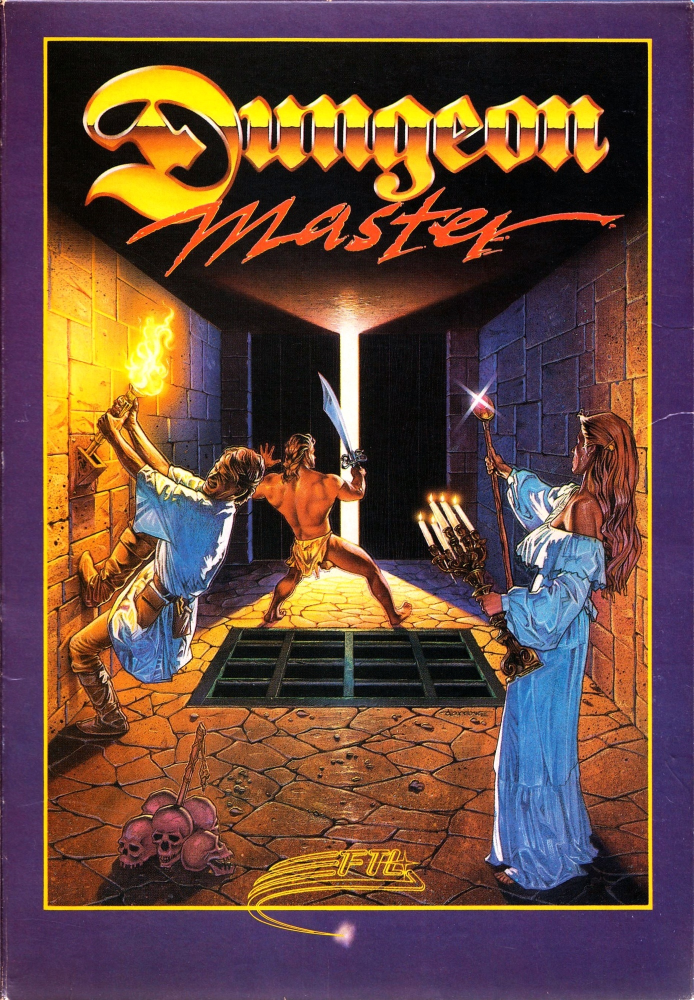
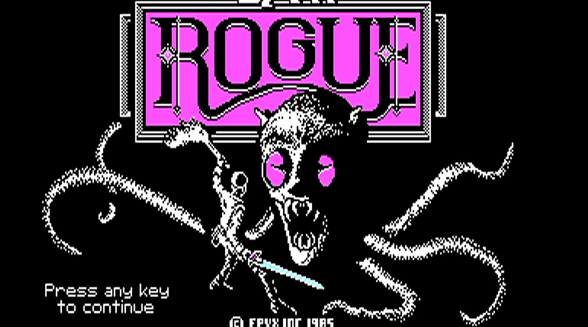
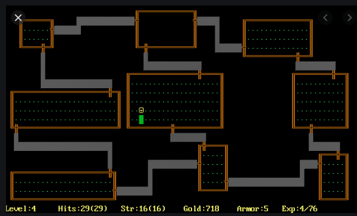
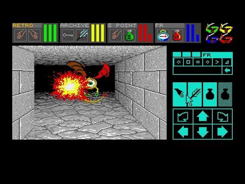
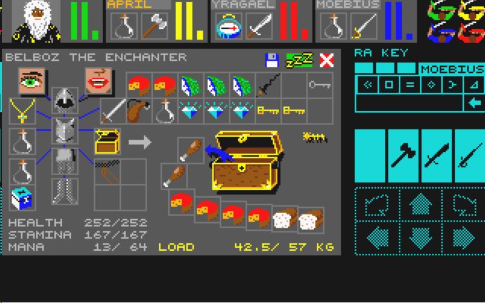
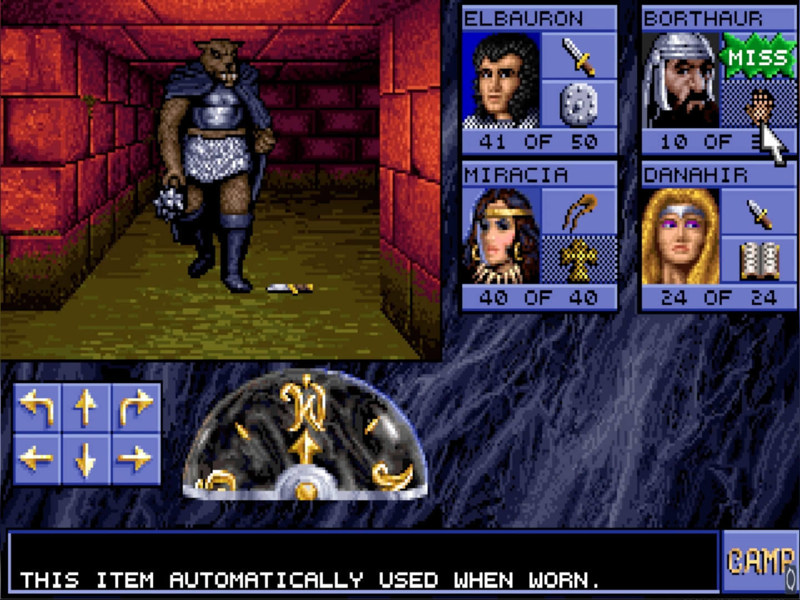
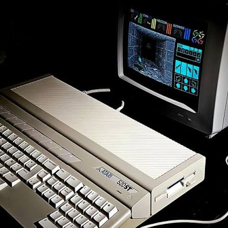

PARLONS HISTOIRE... LE RPG AVANT DUNGEON MASTER

Dungeon Master, FTL Games, 1987.
Dungeon Master est développé par FTL Games et sort sur Atari ST en 1987. Les concepteurs principaux du jeu sont Doug Bell, Andy Jaros et Wayne Holder. À cette époque, le RPG sur ordinateur est déjà un genre bien installé. Des titres comme Wizardry, Rogue, Ultima IV ou The Bard's Tale ont déjà posé des bases solides.

Rogue, exemple de CRPG utilisant des caractères ASCII.
Ces jeux sont des CRPG, pour Computer Role-Playing Game : des jeux de rôle conçus pour l'ordinateur. Dans cette logique, l'immersion et la mise en scène passent après le system design. La gestion des statistiques, des ressources, de l'équipement, les combats en tour par tour et la progression occupent une place centrale. Le joueur est davantage un gestionnaire qu'un spectateur.
L'interface joue donc un rôle très important, que ce soit à travers les menus, le texte ou des graphismes très simples. Rogue, par exemple, utilise des caractères ASCII pour représenter son environnement : des points pour le sol, des "+" pour les portes ou encore des barres pour les murs. Cette approche donne au donjon une immersion que je qualifierais de froide. Les combats sont très structurés et la narration est principalement textuelle.
UNE NOUVELLE APPROCHE... DU DUNGEON CRAWLER
Le projet commence sous un autre nom : Crystal Dragon. Dungeon Master ne sort pas de nulle part puisque sa référence principale reste Wizardry. L'idée de départ était de créer un dungeon crawler du même genre, mais à leur manière.
Dungeon Master ne réinvente donc pas le RPG, mais transforme plusieurs bases du CRPG. L'intention des concepteurs est de proposer un gameplay le plus immersif et interactif possible. Donjons & Dragons a également une influence majeure sur le jeu. Ce qui change surtout, c'est la manière dont le joueur entre en contact avec ces mécaniques.

Exploration du donjon dans Dungeon Master.
Dungeon Master réduit notamment la frontière entre le HRP, Hors Role Play, et le RP, In Role Play, afin de renforcer l'immersion. Mais le jeu casse également quelque chose d'essentiel : le rythme.
Jusqu'ici, la majorité des dungeon crawlers reposent sur le tour par tour. Le joueur peut réfléchir longtemps, analyser chaque action et jouer sans véritable pression.

Combat en temps réel dans Dungeon Master.
Dans Dungeon Master, tout se passe en temps réel. Un monstre peut surgir au mauvais moment, le joueur doit se déplacer face à un ennemi ou lancer un sort suffisamment rapidement. L'erreur n'est donc plus seulement une mauvaise décision : elle peut aussi être liée à un mauvais timing. Le joueur doit apprendre à réfléchir, mais surtout à réagir rapidement.
L'INTERFACE... AU CŒUR DE L'EXPÉRIENCE

Interface principale de Dungeon Master.
L'interface est pour moi l'une des grandes forces de Dungeon Master. Elle est entièrement pensée pour la souris et le clavier, ce dernier servant principalement aux déplacements. L'écran de jeu occupe une grande place, ce qui améliore la lisibilité et le confort par rapport aux anciens CRPG.
Le principe est de cliquer, saisir, poser et manipuler. L'interface semble suivre une idée très simple : si un objet est présent devant le joueur, pourquoi ne pourrait-il pas directement tendre la main pour l'attraper ?
Cette logique devient un véritable principe de design. Pendant un combat, par exemple, si un allié meurt alors qu'il était armé, il est possible de déplacer son cadavre, de récupérer son arme au sol et même de la jeter sur l'ennemi.
L'exploration, le combat et l'utilisation des objets se déroulent donc dans le même espace, sans coupure nette. Cela favorise l'improvisation du joueur et participe à l'illusion d'être directement dans le jeu. L'interface utilise également beaucoup de couleurs et de symboles, ce qui crée progressivement un langage visuel.
LES CHAMPIONS... ET LA STRATÉGIE

Disposition des quatre Champions dans l'interface.
En haut à droite, les quatre personnages ont rapidement attiré mon attention. En expérimentant avec l'interface, j'ai découvert qu'ils étaient directement manipulables. Les personnages placés sur la ligne du haut représentent la première ligne, tandis que ceux placés en dessous sont plus en retrait.
Le joueur doit donc réfléchir à la constitution de son équipe. Les personnages équipés d'armes de courte portée ont intérêt à être placés devant, tandis que les archers et les mages, plus fragiles mais capables d'attaquer à distance, trouvent davantage leur place à l'arrière.

Mains des Champions et jauges de santé, d'endurance et de magie.
En haut de l'écran se trouvent également les mains des Champions ainsi que leurs jauges de santé, d'endurance et de magie. Le personnage dont le nom apparaît en jaune est le leader. Un clic droit sur son portrait permet d'ouvrir son inventaire.

Interface permettant de préparer et lancer les sorts.
Sur la droite de l'écran se trouvent les commandes de magie. Les sorts se préparent en sélectionnant un Champion puis en entrant les symboles nécessaires.
Plusieurs sorts peuvent être préparés avant d'être lancés. Pour être honnête, je n'ai toujours pas compris comment réussir !
APPRENDRE... PAR LA PRATIQUE
Dungeon Master innove également dans sa manière de gérer l'équipe et la progression. Nous ne jouons pas un héros unique : nous vivons l'aventure à travers tout un groupe.
Le jeu pousse surtout une forme d'apprentissage par la pratique. Les personnages progressent en utilisant leurs compétences, et pas seulement en sélectionnant des choix dans un menu. La magie fonctionne selon la même logique : il faut apprendre, tester, comprendre, pratiquer et surtout recommencer.

Inventaire et gestion de l'équipement d'un Champion.
L'une des statistiques les plus importantes est également la charge transportée. Le poids de l'équipement influence directement l'endurance : plus un personnage est chargé, plus il se fatigue vite et plus la nourriture et la boisson diminuent rapidement. La gestion de l'équipement devient donc essentielle à la survie.
Cette mécanique m'a notamment fait penser à la gestion de l'inventaire dans Resident Evil.
Au moment de choisir mes Champions, j'ai également dû décider entre les ressusciter ou les réincarner. Au début, je ne comprenais pas vraiment la différence. La résurrection permet de conserver leurs caractéristiques actuelles, tandis que la réincarnation remet leurs compétences à zéro. Ce deuxième choix rend le début de l'aventure plus difficile, mais permet au personnage de progresser plus rapidement par la suite.
L'INFLUENCE... DE DUNGEON MASTER

Eye of the Beholder, l'un des héritiers de Dungeon Master.
Après Dungeon Master, beaucoup de copies conformes apparaissent sans forcément connaître le même succès. Certains jeux méritent cependant d'être cités puisqu'ils apportent leur propre personnalité malgré l'inspiration évidente.
Eye of the Beholder est probablement l'un des héritiers les plus directs de Dungeon Master. Lands of Lore reprend une base similaire mais avec une approche plus moderne et cinématographique.
Ultima Underworld pousse de son côté plus loin la 3D. On peut également citer Ishar : Legend of the Fortress et ses suites.
PARLONS TECHNIQUE... CRÉER MALGRÉ LES LIMITES TECHNIQUES

Atari ST, machine sur laquelle Dungeon Master sort en 1987.
Sur le plan technique, l'équipe a une contrainte : faire tenir et tourner le jeu sur des machines très limitées, parfois avec seulement 512 Ko de RAM, et même viser une distribution sur une simple disquette.
Pour y parvenir, l'équipe met en place le Dungeon Construction Kit. C'est un outil interne qui permet de faciliter la création des niveaux : produire plus, corriger plus vite et surtout optimiser le stockage. Tout est optimisé au maximum, notamment la compression des données et la gestion de la mémoire. Ils ont réussi à occuper moins de 400 Ko sur disquette.

Équipe de développement et de direction de Dungeon Master.
Le projet commence en UCSD Pascal sur Macintosh II, dans la lignée de certains CRPG de l'époque comme Wizardry, mais cette solution est trop lente pour afficher correctement les graphismes en perspective. La pseudo-3D fluide en temps réel est gourmande et l'équipe doit donc trouver une autre solution.
C'est alors que Doug Bell apprend le C et réécrit le jeu sur Atari ST. Cela améliore immédiatement les performances.
UNE PUCE SONORE... REPOUSSER LES LIMITES DU SON

Puce sonore YM2149 utilisée par l'Atari ST.
Pour finir, la puce sonore YM2149 de l'Atari ST est surtout conçue pour produire des bips et des sons très simples. D'après mes recherches, pour créer des bruitages particuliers, le jeu monte et baisse le volume extrêmement rapidement.
Grâce à cette technique, l'oreille entend différents bruitages comme les pas, les portes, les monstres, les attaques ou encore les cris lorsqu'un héros meurt.
Cette technique n'est pas une invention de l'équipe, mais les développeurs ont exploité au maximum les possibilités de la puce sonore afin de proposer un gameplay plus vivant malgré les limites de la machine.
CONCLUSION...
Finalement, l'innovation de Dungeon Master vient autant de cette base technique que de son game design. Le succès suit : plus de 40 000 ventes dès 1987. Le jeu réalise les meilleures ventes des jeux Atari ST.
Dungeon Master a changé l'évolution des RPG en transformant les codes du dungeon crawler. Il a prouvé qu'un jeu de rôle sur ordinateur pouvait être en temps réel, plus immersif et plus interactif, malgré les limites technologiques de l'époque.